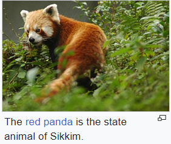

FLORA AND FONA

Sikkim is situated in an ecological hotspot of the lower Himalayas,
one of only three among the ecoregions of India.
The forested regions of the state exhibit a diverse range of fauna and flora.
Owing to its altitudinal gradation, the state has a wide variety of plants,
from tropical species to temperate, alpine and tundra ones,
and is perhaps one of the few regions to exhibit such a diversity within such a small area.
Nearly 81 per cent of the area of Sikkim comes under the administration of its forest department.
Sikkim is home to around 5,000 species of flowering plants, 515 rare orchids,
60 primula species, 36 rhododendron species, 11 oak varieties, 23 bamboo varieties,
16 conifer species, 362 types of ferns and ferns allies, 8 tree ferns, and over 900 medicinal plants.
A relative of the Poinsettia, locally known as "Christmas Flower", can be found in abundance in the mountainous state.
The Noble Dendrobium is the official flower of Sikkim, while the rhododendron is the state tree.
Orchids, figs, laurel, bananas, sal trees and bamboo grow
in the Himalayan subtropical broadleaf forests of the lower altitudes of Sikkim.
In the temperate elevations above 1,500 metres (4,900 ft) there are Eastern Himalayan broadleaf forests,
where oaks, chestnuts, maples, birches, alders, and magnolias grow in large numbers,
as well as Himalayan subtropical pine forests, dominated by Chir pine.
Alpine-type vegetation is typically found between an altitude of 3,500 to 5,000 metres (11,500 to 16,400 ft).
In lower elevations are found juniper, pine, firs, cypresses and
rhododendrons from the Eastern Himalayan subalpine conifer forests.
Higher up are Eastern Himalayan alpine shrub and meadows and high-altitude wetlands,
which are home to a wide variety of rhododendrons and wildflowers.
The fauna of Sikkim include the snow leopard,[74] musk deer, Himalayan tahr,
red panda, Himalayan marmot, Himalayan serow, Himalayan goral, muntjac,
common langur, Asian black bear, clouded leopard,[75] marbled cat, leopard cat,
dhole, Tibetan wolf, hog badger, binturong, and Himalayan jungle cat.
Among the animals more commonly found in the alpine zone are yaks,
mainly reared for their milk, meat, and as a beast of burden.
The avifauna of Sikkim include the impeyan pheasant,
crimson horned pheasant, snow partridge, Tibetan snowcock,
bearded vulture and griffon vulture, as well as golden eagles, quails,
plovers, woodcocks, sandpipers, pigeons, Old World flycatchers, babblers and robins.
Sikkim has more than 550 species of birds, some of which have been declared endangered.
Sikkim also has a rich diversity of arthropods, many of which remain unstudied.
Some of the most understudied species are Sikkimese arthropods, specifically butterflies.
Of the approximately 1,438 butterfly species found in the Indian subcontinent,
695 have been recorded in Sikkim. These include the endangered Kaiser-i-hind,
the Yellow Gorgon and the Bhutan Glory.